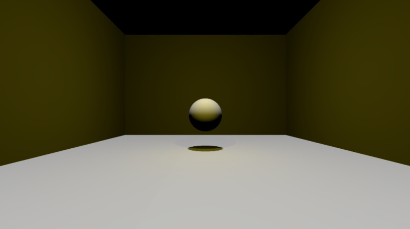
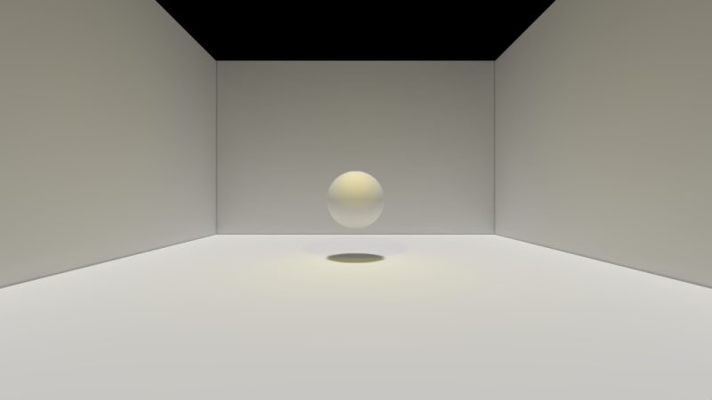
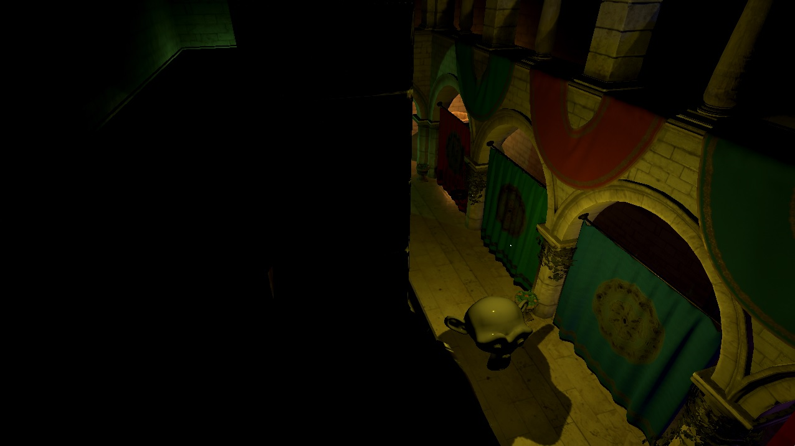
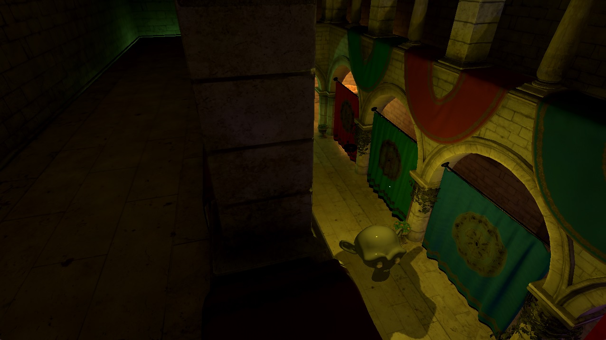
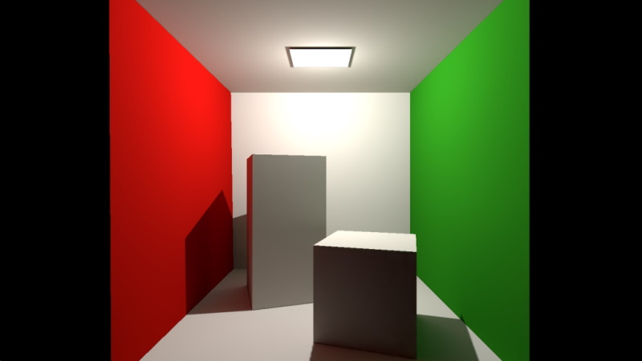

Lightmaps and Global Illumination
Introduction
Baked lightmaps allow pre-generating the direct lighting from lights such as DirectionalLight, PointLight, and SpotLight, including the shadows cast by the lights. At run time, instead of performing the appropriate calculations in the fragment shader, and, in case of shadows, generating the potentially costly shadow maps in real time, the pre-generated image map is sampled instead.
Note: As of Qt 6.4, lightmap baking is in an early technical preview state. Changes to features, quality, and API are likely to happen in future releases.
A lightmap is generated per Model. Even if a Model has multiple submeshes, and is therefore associated with multiple materials, there will be one single lightmap image generated for the entire model.
Lightmaps are generated using raytracing, which by nature provides proper occlusion ("light does not travel through walls"), and possibly more realistic shadows than the real-time techniques for lighting and shadow mapping.
More importantly, lightmaps also allow baking indirect lighting, providing a solution for global illumination. This takes light rays reflected from other surfaces in the scene into account.
Below is a simple example. The scene contains four Rectangle and a Sphere model, with a DirectionLight pointing downwards and a PointLight. The rectangle models are rotated 0 and 90 degrees, which exaggerates the limitations of the real-time lighting calculations because they are all either parallel or perpendicular to the DirectionalLight's direction.
On the right, the scene is rendered with lightmapping enabled, after having lightmaps baked for all five models. Both lights are set to fully baked, meaning both direct and indirect illumination is baked. Indirect lighting uses 256 samples and a maximum of 3 bounces. The resulting lightmaps were then denoised. This gives a significantly more realistic image.
Real-time lighting

Fully baked lighting

Below is a snippet that shows how the lightmapped results were achieved. The difference lies in the usedInBakedLighting, bakeMode, and bakedLightmap properties. For this example, the lightmap size has been reduced using the lightmapBaseResolution property, to save disk space and reduce application load times.
DirectionalLight {
bakeMode: Light.BakeModeAll
eulerRotation.x: -90
brightness: 0.5
castsShadow: true
shadowFactor: 75
}
PointLight {
bakeMode: Light.BakeModeAll
y: 200
z: 100
color: "#d9c62b"
castsShadow: true
shadowFactor: 75
}
Model {
usedInBakedLighting: true
lightmapBaseResolution: 256
bakedLightmap: BakedLightmap {
enabled: true
key: "sphere1"
}
source: "#Sphere"
materials: PrincipledMaterial { }
y: 100
}
Model {
usedInBakedLighting: true
lightmapBaseResolution: 256
bakedLightmap: BakedLightmap {
enabled: true
key: "rect1"
}
source: "#Rectangle"
materials: PrincipledMaterial { }
eulerRotation.x: -90
scale: Qt.vector3d(10, 10, 10)
}
// ... three additional Rectangle models, with rotations 0, 90, and -90
The above example used fully baked lights. A light can also be configured to only use baked lighting for indirect illumination, while performing direct lighting and shadow mapping in real time. In the below scene there are 5 point lights, all of which are set to BakeModeIndirect for the right screenshot. While the direct lighting and shadows look identical, the right image looks significantly better due to a degree of global illumination added.
Real-time lighting

With baked indirect lighting added

Important considerations when working with lightmaps
Lights contributing to baked lighting have their bakeMode property set to either BakeModeIndirect or BakeModeAll. The latter indicates that both the direct and indirect contribution for that particular light is coming from the lightmap. The direct contribution always includes shadows as well. On the other hand, if the intention with the lightmap is only to add indirect illumination to the scene for a particular light, while still having direct lighting calculated (and perform shadow mapping) in real time, then the light should use BakeModeIndirect instead.
Note: Lightmaps are, generally speaking, suitable for models that are static when it comes to transform, geometry, and materials. The same applies to the lights participating in the baked lighting.
For example, a scene that rotates a Model by animating the eulerRotation property will give visually incorrect results when applying a lightmap to that Model. The rendering results for that particular Model will be incorrect, as the pre-generated lightmap only captures one single rotation state for the object. The same would be true, taking another example, if the material for one of the model's submeshes dynamically changes its baseColor property based on time (animation) or some user interaction. The lightmap can only capture one given material baseColor. The same is true for lights. For example, a DirectionalLight that rotates, changes its brightness, color, etc. over time is not suitable for baked lighting.
Note: On the other hand, it is always a designer choice when to use lightmapping. Especially with BakeModeIndirect lights, it is likely that there will be scenes where the results are still visually satisfying, even though some of the objects in the lightmapped scene employ dynamic behavior.
Lightmapping is a complex engine and tooling feature. It replaces and reimplements several pieces of the engine's rendering pipeline. It works with a fundamentally different rendering model when baking lightmaps, while still consuming and interoperating with the same scene structure, asset data, and engine data structures. The raytracing-based results will often outclass the real-time alternatives, sometimes significantly, which comes at the expense of limitations, such as the mandatory static-ness of the models and lights involved, and, sometimes, quality and rendering artifact issues that are specific to lightmapping.
In practice it will be an artistic choice by the designers what type of lighting to use, and when. All three bakeMode settings have their uses, and complex, larger scenes may very well utilize all three for different lights, depending on what is deemed suitable for a given section of the scene, and what sort of models, materials, and dynamic behavior are present. Lightmapping is not a simple on/off type of toggle switch that can be enabled for any scene and application, but a powerful feature that assumes careful evaluation of the lighting needs of a given scene, and often requires the scene contents and behavior to be designed accordingly, combined with a test-and-tune loop where different lightmap baking and quality settings are explored and tested before deciding on the final approach and the related settings.
Note: Lightmaps do not support two-sided surfaces. With real time lighting a material with a cull mode of Material.NoCulling automatically inverts the normal as appropriate based on the facing of the fragment. This is not an option for lightmaps since lightmap baking does not operate in view space. Therefore, avoid baked lighting for models that would rely on this.
Baking Lightmaps
Properties and types relevant for baking lightmaps, meaning the offline process of generating the image maps that capture direct and indirect lighting and can be used by the renderer in subsequent runs of the application:
- Model::usedInBakedLighting
- Model::lightmapBaseResolution,
- Light::bakeMode,
- Lightmapper and SceneEnvironment::lightmapper
- BakedLightmap and Model::bakedLightmap
As of Qt 6.4, the lightmap baking process has to be triggered manually. Whenever the command line argument --bake-lightmaps is present, or the environment variable QT_QUICK3D_BAKE_LIGHTMAPS is set to 1 (or another non-zero value), the engine will work in baking mode and exit the application once baking has completed. The steps of the baking process can be followed by checking the messages printed on the debug output. The result is a set of .exr files written to the current directory, where the filenames each have a qlm_ prefix, followed by the unique key from BakedLightmap::key.
Preparing a lightmapped scene takes the following main steps:
- Identify which models should use a lightmap, and which models should contribute to the lightmap. Models that are part of the lightmapped scene should set Model::usedInBakedLighting to true. Models that are lightmapped (i.e., a lightmap is to be baked for them) should in addition set Model::bakedLightmap to an enabled BakedLightmap object, that provides a unique key that will persistently identify the particular Model object instance. (this is because Qt needs a key to identify the model data in persistent disk storage) Only models with static geometry, transformation, and materials are guaranteed to have correct results when lightmapped at run-time. Most commonly, anything that leads to a non-static world transform over time, such as a dynamically changed or animated position, rotation, or scale, will disqualify the model from participating. Artistic needs can override this, however, especially for models that only contribute to baked indirect lighting but are not themselves lightmapped. For these it may often be visually acceptable to have dynamic transforms, but this always depends on the model and the scene in question.
- Identify which lights should contribute, and to which degree. Light::bakeMode offers three options:
- Light.BakeModeDisabled, the default, which effectively makes the light ignored for all lightmapping purposes.
- Light.BakeModeIndirect is often the "safe" choice, if the only goal is to have a level of global illumination (indirect lighting) in the scene, while not affecting the rendering results for the light in other ways. In this mode the renderer will continue to perform all lighting, including diffuse, specular, sky/environment contributions, and shadow mapping for this light using the standard real-time techniques. However, the light will contribute to indirect lighting using the pre-baked data, possibly leading to illuminating surfaces that are otherwise left untouched by the standard real-time lighting calculations.
- Light.BakeModeAll is an option which will likely be used for certain lights only, based on the designers' evaluation for what is deemed appropriate for a given scene. In this mode all contribution from the light is baked, including shadows. As of Qt 6.4 specular lighting are not supported as part of the baked lighting, so such lights will not have specular contributions. They will, on the other hand generate raytraced, baked shadows and have proper occlusion for the light (will not "pass through walls", for instance) since here all the direct lighting contributions resulting from the light are raytraced at lightmap baking time, instead of being calculated at run time. In addition, indirect lighting is baked, just as with BakeModeIndirect.
- Running the scene (application) in baking mode, ensuring lightmaps are successfully generated. As of Qt 6.4, applications are expected to be structured in a way that the lightmapped scene is the first view shown, or that the scene in question can be loaded up with a QML viewer such as the
qmltool. Once baking completes, the progress of which can be followed on the console/debug output, the application exits. - Running the scene (application) normally, to see how it looks with the lightmaps loaded. The tuning can then begin:
- For some models it will make sense to reduce lightmapBaseResolution from the default 1024 to something smaller. This applies especially to the built-in primitives and anything with simple enough geometry. This leads to smaller lightmaps and faster bake times. When baking the first time, the default should be sufficient, the value can be tuned afterwards.
- The Lightmapper object exposes numerous settings that have reasonable defaults, but it is not unlikely that some of these will need to be tuned to match the designers' expectation. For example, samples and bounces can be changed to affect the quality of indirect lighting, while indirectLightFactor allows making the indirect contribution more prominent. If artifacts, in particular around shadows, occur, bias can be fine-tuned.
- Denoising the generate lightmaps is essential. Indirect lighting is calculated using path tracing, which produces noisy images depending on the number of the samples used. Increasing the sample count reduces noise, but increases the time needed to generate the lightmap. Regardless of the sample count, it will almost always make sense to run a denoiser on the generated lightmaps, which are 32-bit RGBA floating point images stored in as .exr files.
As of Qt 6.5, a runtime solution is provided interactively through the DebugView. Under Tools there is now a button that when pressed will trigger the baking process. A window will pop up showing the current process. Canceling can be done by either hitting the cancel button or closing this window. When complete, it will try to overwrite the existing .exr files if possible using the loadPrefix, else they will be written to the current directory. For now, Denoising is still a manual process even when using the runtime solution.
Denoising
Below is an example of a Cornell box scene, rendered first using the lightmap baked with 256 samples and a maximum of 3 bounces. In the second example, the generated image file has been run through a denoiser using the Open Image Denoise library. The results look significantly better, with the noise mostly gone.
Original
Denoised

A simple, Qt-based command-line wrapper for OIDN that works with the Qt Quick 3D-generated qlm_*.exr images is available at https://git.qt.io/laagocs/qlmdenoiser. It currently needs to be built from source and no pre-built binaries are available.
Lightmap UVs
Lightmap UV coordinates do not use the same UV data as regular texturing. When rendering with lightmaps, neither the UV0 nor UV1 data is used by the renderer when sampling the lightmap. Instead, there is an additional, dedicated UV channel in the mesh, containing UV charts laid out in a manner that is suitable for the purposes of lightmapping. This involves avoiding overlaps and having padding where appropriate. For regular UV data there are no such requirements, and one may very well want to use the same U and V coordinates for more than one vertex.
The process of generating a suitable UV set is called lightmap UV unwrapping. Qt is always able to perform this at run (load) time, both when baking lightmaps and also when rendering a scene normally.
In order to improve mesh load times by avoiding generating lightmap UV data for lightmapped models at run time, there are two options:
- For models without lightmap UV data available the lightmap baking process also outputs a set of
qlm_*.meshfiles, the names generated based on the BakedLightmap::key, similarly to the with the.exrimages. If the application wishes to, it can ship these extra.meshfiles together with the.exrassets. When present, these mesh files will be used in place of the regular model data, with the lightmapping related data readily available. This is completely optional, however. When no qlm_key.mesh is found at run time, the UV unwrapping is done at run time, transparently to the application. - Alternatively, the balsam tool offers the option to pre-generate the lightmap UV data at asset import time. This means that the model's
.meshfile will contain the necessary data right from the start, and no extra meshes will be generated during lightmap baking time, and so there are no extra assets to ship with the application (apart from the lightmap images, of course). To do this, pass--generateLightmapUVto balsam.
Lightmap texture size
For each model, including all its submeshes, the lightmap baking process will determine a suitable lightmap texture size during the lightmap UV generation phase. This has an impact on quality, performance, and resource usage (both on disk and in memory).
The default is often suitable and needs no adjustment, especially for models with medium to high complexity.
For very simple models it may be desirable to manually reduce the size, however, because a smaller lightmap size could still provide visually good looking results, while reducing the asset (lightmap image) sizes saves both disk space and memory. To do this, set the lightmapBaseResolution to a suitably small number. Common choices are 256, 512, or 1024, but it could be another number as well, with 128 as the minimum. The actual lightmap width and height will likely be different, but in approximately the same ballpark as the specified size.
When changing the value, one should always rebake the lightmaps and visually inspect the results in order to evaluate the effects of the changed lightmap size.
Using Lightmaps at Run-Time
Properties and types relevant when using the pre-baked lightmaps at run time:
Once the baking has successfully completed, running the application normally (without the command-line argument or environment variable set) will now pick up the generated lightmap images and render correctly, which is not possible until the lightmaps have been baked first. If desired, the application can place those in a different location, or ship them as part of the executable via the Qt Resource System. This is enabled by the BakedLightmap::loadPrefix property.
Taking the example code with the sphere and four rectangles from above, the baking process generates five .exr files (qlm_sphere1.exr, qlm_rect1.exr, qml_rect2.exr, etc.), and a list file qlm_list.txt which is useful as input for denoising utilities that support processing multiple files in one go but is not used at runtime otherwise. The application needs to ship the .exr files, so that they can be found by the engine, either in the same directory as the containing component, or in the location specified by the loadPrefix.
The loading rules also apply to the optional .mesh files, such as qlm_sphere1.mesh or qlm_rect1.mesh. If the application wishes to accelerate the scene load times, it should ship these extra .mesh files next to the .exr lightmap images.
See also Qt Quick 3D - Baked Lightmap Example.